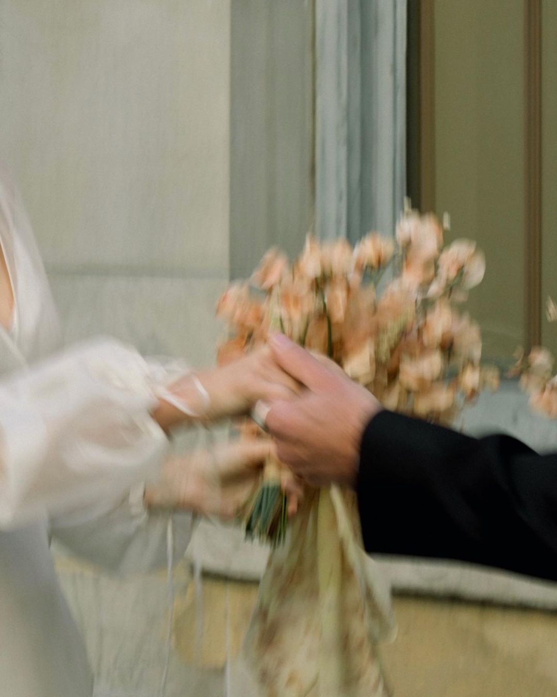

To My Endless Love,
Happy Anniversary! Looking back at everything we have shared, I am overwhelmed by how lucky I am to be loved by you. You have this incredible way of making the ordinary feel extraordinary, turning quiet moments into my absolute favorite memories. Every laugh, every late-night conversation, and every gentle touch reminds me that I have found my forever in you.
Thank you for being my constant, my safe haven, and my biggest supporter. I promise to keep choosing you, to keep holding your hand through whatever life throws our way, and to love you more deeply with every passing day. Here is to all the beautiful chapters we have yet to write. I love you, always and completely.